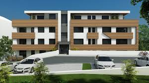

Nu stii care este stilul potrivit pentru casa ta?
Arunca o privire mai jos si vei gasi solutia!
Description
Bine ați venit pe PlaCo Design Exterior, destinația online unde pasiunea pentru frumusețea exteriorului se întâlnește cu practicitatea și inovația în amenajări exterioare! De la grădini pline de viață și terase primitoare, până la spații de relaxare și divertisment în aer liber, suntem aici pentru a vă inspira și ghida în transformarea viselor dumneavoastră în realitate. Cu o gamă diversificată de produse, idei creative și sfaturi practice, vă ajutăm să creați o oază personalizată de confort și frumusețe în jurul casei dumneavoastră. Bucurați-vă de fiecare colțișor al exteriorului dumneavoastră și descoperiți cum să transformați spațiul în care trăiți într-un paradis personalizat!
Models
Fatade case si fatade blocuri
Pentru ca nu puteti lasa casa cu caramida la vedere, aspectul ei fiind unul inestetic, firma noastra poate realiza finisarea
fatadei casei si a blocurilor cu ajutorul instalatiilor de ultima generatie.
Fatada se va tencui cu ajutorul unei pompe de tencuit, astfel ca veti fi sigur de calitatea lucrarii
pe intreaga suprafata a fatadei.
Tencuiala se realizeaza cu cele mai bune materiale de constructii de pe piata. De asemenea, dupa finalizarea tencuielii
va putem realiza si zugraveala exterioara in orice culoare doriti, ori va putem realiza tencuieli decorative pentru un
aspect exterior cu totul si cu totul aparte.

Termoizolatii exterioare
Pentru ca s-a dovedit faptul ca prin izolarea corecta a unei locuinte,
fie ea casa particulara sau bloc de apartamente, compania noastra s-a specializat si in lucrari de izolare termica exterioara
cat si prin amenajari exterioare prin materiale puse la dispozitia noastra sau cu materialele pe care ni le puneti la dispozitie.
Hidroizolatii terase
In sezonul ploios sau in iernile grele, terasele sunt zone in care apa poate persista pentru o lunga durata de timp,
putand afecta constructia prin infiltrarea apei in pereti.
Dar prin realizarea de hidroizolatie de o calitate superioara,
problema infiltrarii apei in pereti sau in placa terasei nu va mai exista.
Constructii garduri
Pentru ca o casa si o curte nu se poate delimita altfel decat prin construirea unui gard, compania noastra realizeaza constructii de garduri de la nivelul de proiectare pana la cel de executare si finisare, pentru ca intreaga lucrare sa fie una de calitate.
Fier forjat
Pentru ca un gard trebuie sa aiba un aspect la fel de incantator precum fatada casei,
realizam panouri de gard si porti din fier forjat in dimensiunile si in forma dorita de catre dumneavoastra.
Pavaje
Curtea poate fi plina de flori bine ingrijite si copaci din care poti manca un fruct sanatos,
dar nu poate avea un aspect placut daca nu este prevazuta cu alei din pavaj.
Compania noastra realizeaza pavaje pentru curti interioare de mici dimensiuni, alei din dreptul casei pana la iesirea din curte.
De asemenea, punem la dispozitie servicii de pavare ale parcarilor unor centre comerciale, cladiri de birouri sau hale centrale.
In cazul in care va sunt necesare si alte amenajari exterioare ce nu au fost mentionate anterior si doriti ca realizarea lor sa fie facuta de catre firma noastra, va asteptam sa ne expuneti ceea ce ati dori sa realizam, iar noi vom stabili daca va putem fi de ajutor. Dar, avand in vedere ca suntem o firma de constructii formata din profesionisti adevarati in constructii, va putem aproape garanta ca va vom putea realiza orice lucrari ce tin de amenajarile exterioare.
Photos
Recenzii de la clienții noștri:
"Colaborarea cu PlaCo ExteriorDesign a fost o plăcere! De la început până la sfârșit, au gestionat proiectul nostru cu profesionalism și expertiză. Echipa a fost punctuală, bine informată și a finalizat lucrarea înainte de termen. Casa noastră se simte mai sigură și mai eficientă datorită serviciului lor de primă clasă. Recomandăm cu încredere!"
"Nu pot să spun decât lucruri bune despre PlaCo ExteriorDesign. Au transformat sistemul nostru de irigații învechit într-o minune modernă. Atenția lor la detalii și angajamentul față de calitatea meșteșugului a fost evident pe tot parcursul procesului. Comunicarea a fost excelentă, iar întotdeauna au fost disponibili să abordeze orice îngrijorare. Suntem încântați de rezultate și nu am ezita să-i angajăm din nou pentru proiecte viitoare."
"Recent am angajat PlaCo ExteriorDesign pentru un proiect complex de instalare a unui sistem de iluminat exterior, și nu am putea fi mai fericiți cu rezultatul. De la consultația inițială până la inspecția finală, echipa lor a demonstrat profesionalism și pricepere. Au depășit așteptările pentru a asigura că totul a fost instalat corect și au oferit chiar și sfaturi valoroase de întreținere. Acum, casa noastră este luminată frumos și suntem recunoscători pentru serviciul lor excepțional. Mulțumim, PlaCo ExteriorDesign!"
Contact
Tel: 0712 345 678
Facebook: PlaCo ExteriorDesign
email: placoExterior@mail.com